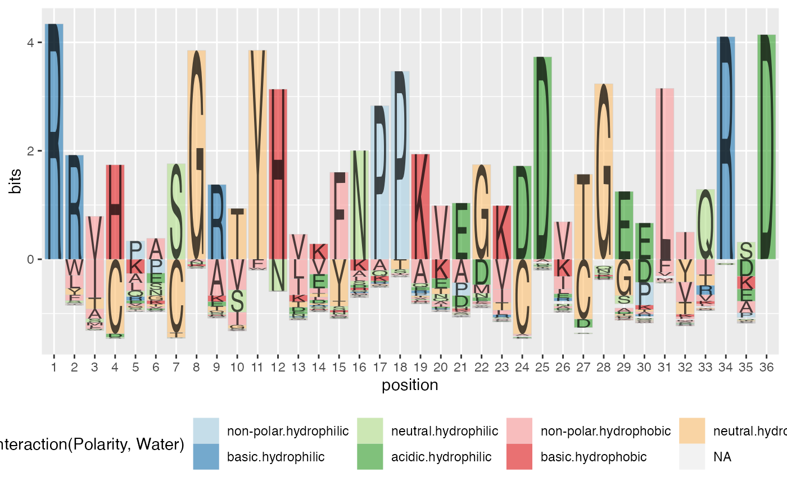
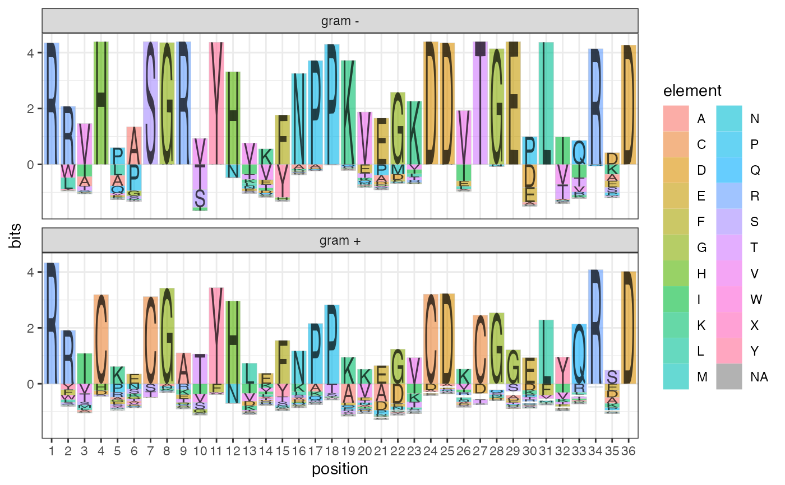

Sequence logo plots.
GeomLogo geom_logo(mapping = NULL, data = NULL, stat = "logo", position = "logo", show.legend = NA, inherit.aes = TRUE, width = 0.9, alpha = 0.6, na.rm = TRUE, alphabet = NULL, ...)
| mapping | The aesthetic mapping, usually constructed with aes or aes_string. Only needs to be set at the layer level if you are overriding the plot defaults. |
|---|---|
| data | A layer specific dataset - only needed if you want to override the plot defaults, |
| stat | The statistical transformation to use on the data for this layer, |
| position | The position adjustment to use for overlappling points on this layer, |
| show.legend | Whether to show the legend or not |
| inherit.aes | Whether to inherit the aes or not |
| width | maximum width of the letters, defaults to 0.9, |
| alpha | amount of alpha blending used for putting letters on top of rectangle, defaults to 0.25, |
| na.rm | Whether to remove NAs or not |
| alphabet | Specifies which alphabet is used in rendering the logo. alphabet can be a dataframe (output from createPolygons), a character specifying a font or NULL. If NULL, the default alphabet set is used (based on Helvetica). Use output from `createPolygons` to generate alphabet polygons for a different font. |
| ... | other arguments passed on to layer. This can include aesthetics whose values you want to set, not map. See layer for more details. |
An object of class GeomLogo (inherits from Geom, ggproto, gg) of length 6.
library(ggplot2) data(sequences) ggplot(data = ggfortify(sequences, "peptide")) + geom_logo(aes(x=position, y=bits, group=element, label=element, fill=interaction(Polarity, Water)), alpha = 0.6) + scale_fill_brewer(palette="Paired") + theme(legend.position = "bottom")ggplot(data = ggfortify(sequences, "peptide", treatment = "class")) + geom_logo(aes(x=class, y=bits, group=element, label=element, fill=element)) + facet_wrap(~position, ncol=18) + theme(legend.position = "bottom")ggplot(data = ggfortify(sequences, "peptide", treatment = "class")) + geom_logo(aes(x=position, y=bits, group=element, label=element, fill=element)) + facet_wrap(~class, ncol=1) + theme_bw()ggplot(data = ggfortify(sequences, "peptide", treatment = "class")) + geom_logo(aes(x=class, y=bits, group=element, label=element, fill=interaction(Polarity, Water))) + scale_fill_brewer("Amino-acids properties", palette="Paired") + facet_wrap(~position, ncol=18) + theme(legend.position="bottom") + xlab("") + ylab("Shannon information in bits")